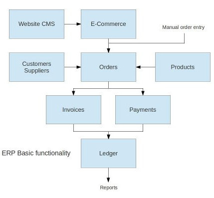

Starting with ERP can be a rather complicated process. That is why having a tested and documented implementation process is essential.For the system you need support for the complete implementation process which can take up to 1-2 years to complete.
The basic ERP functionality
